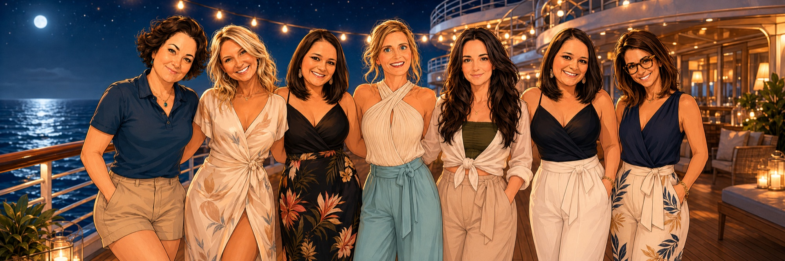
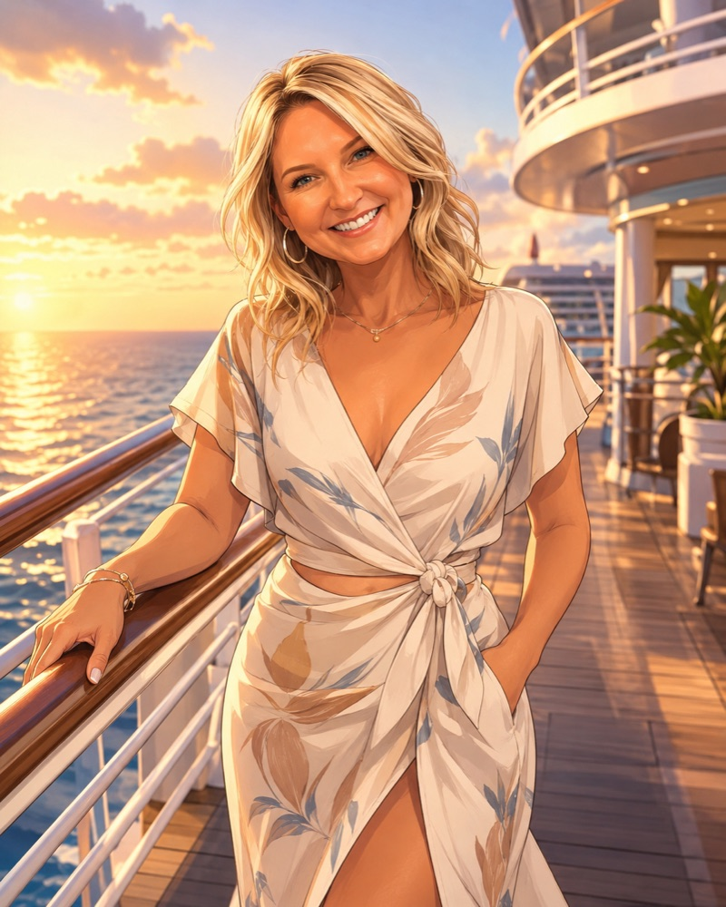
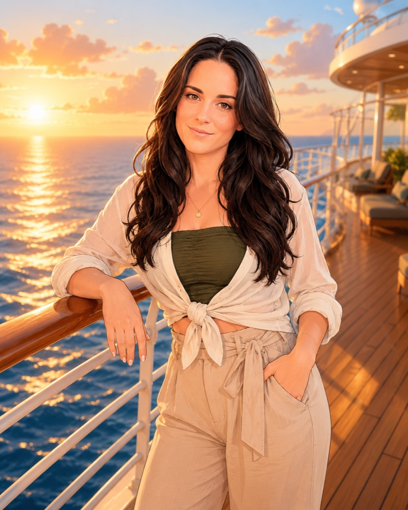
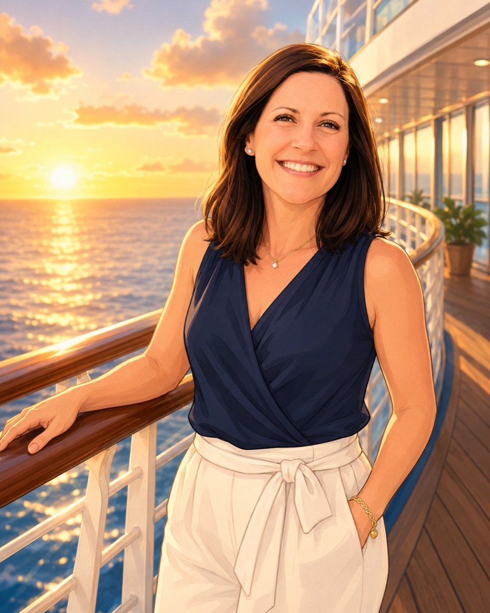
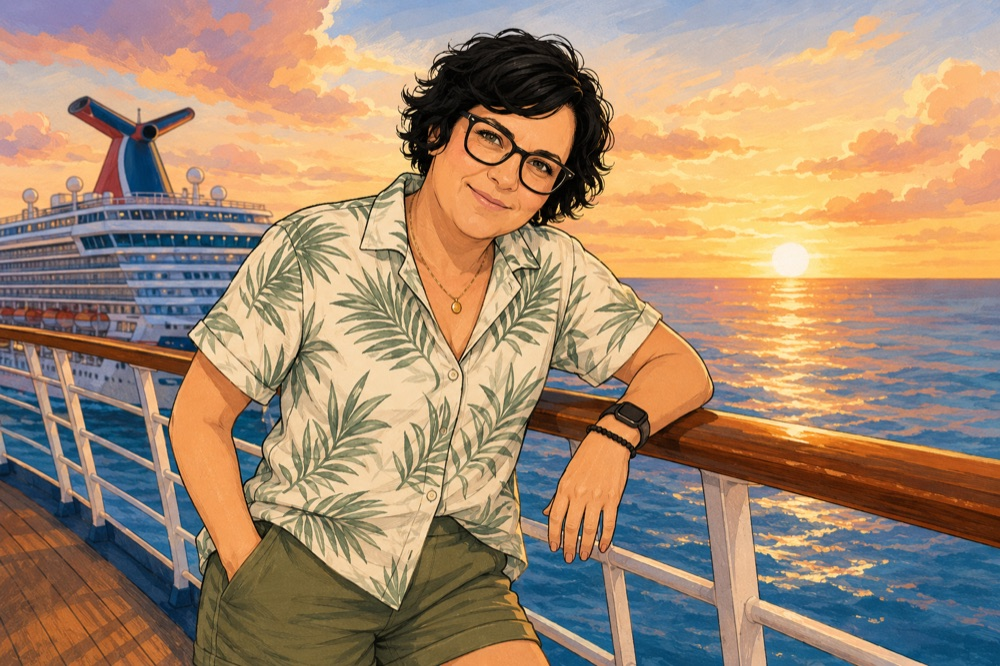

Day 1 · All aboard
Casual
70s dance party
disco sparkle
✦ Something easy for sail-away

MARINER OF THE SEAS
OCT. 12–17
THE MOOD
sun-warmed skin · tropical drinks · an aggressively good outfit planMARINER OF THE SEAS
A QUICK STYLE GUIDE
These are the themes shared for the matching May sailing—perfect for planning, but check the Royal app on board for the final October schedule.
Day 1 · All aboard
70s dance party
disco sparkle
✦ Something easy for sail-away
Day 2 · Golden hour
Country Roundup
boots + bold earrings
✦ A little denim, a little sparkle
Day 3 · Island energy
80s dance party
sunset brights
✦ Bright color / resort print
Day 4 · Main-character night
Hush party + Crazy Quest
all white everything
✦ Your white-out look and dancing shoes
Day 5 · One more sunset
Bon voyage
one last toast
✦ Comfy but camera-ready
DINNER VIBES
01 Welcome aboard American
02 A taste of France French
03 A taste of the Caribbean Caribbean
04 A taste of Mexico Mexican
05 A taste of Italy Italian

SEVEN GIRLS · FIVE NIGHTS
OUR TRIP DOCS
Quick previews below—open the live Google Doc whenever you need to add, check, or update something.
Outfits, carry-on essentials, room shares, and buy-ahead reminders.
THE PACK-SMART RULE
One suitcase. One carry-on. One beach bag.Theme looks · beach day · cabin must-havesContacts, allergies, medications, and the details that matter in a pinch.
PRIVATE GROUP REFERENCE
Keep the important things close.Emergency contacts · allergies · medication notesTHE NO-STRESS LIST
48 HOURS OUT
01 Complete online check-in & save your boarding pass.
02 Download the Royal Caribbean app before port Wi-Fi gets weird.
03 Keep documents, medication, swimsuit and one outfit in your carry-on.
04 Turn on airplane mode when we leave the dock—then go find the pool.
THE CREW






